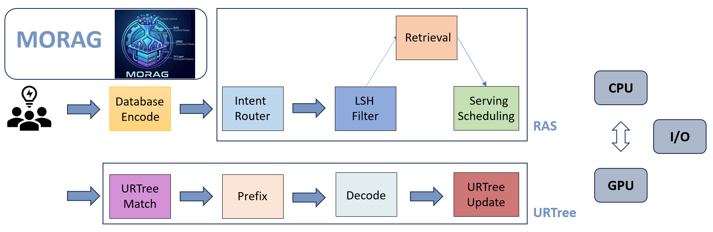

About Me
I am a second-year undergraduate student in the Hongyi Honor Class, School of Computer Science at Wuhan University. I joined the Luojia Totem Database Lab in my freshman year, where I am fortunate to be advised by Prof. Sheng Wang. And I am also fortune to be advised by Zhiyu Chen from Amazon.
My research focuses on the LLM System, aiming to make efficient and "intelligent" data management in mordern systems. I'm also passionate about topics on AI infrastructure and Database Systems.
Education

Wuhan University
Sept. 2024 - Present
B.Eng. in Computer Science (Hongyi Honor Class)
Experience
Totem Database Lab, Wuhan University
2025.1-present
Incoming Summer Research Intern, Prof. Tao Lin's Lab, Westlake University
Summer 2026
Research Interests
Awards and Honors
Scholarship for Excellent Academic Performance (Tianyuan Dic)
Nov. 2025
Scholarship for Excellent Academic Performance, WHU
Sept. 2025
Outstanding Student, Wuhan University
Sept. 2025
Tencent Open Source Core Contributor / Award
Sept. 2025
Outstanding Freshman Award, Wuhan University
Sept. 2024
Research & Projects
MoRAG: Multi-Query Optimized RAG
2025 - Present
Researching RAG system optimization for high-concurrency scenarios. Key components include:
- Batch Retrieval and Multi-Query Scheduling algorithms.
- Same-Batch Joint Inference for improved throughput.
- System-level optimization for "Intelligent" data management.

OpenTenBase Migration & Optimization
2025
Selected for the Tencent Rhino Bird Open Source Program.
- Developed migration scripts to update OpenTenBase from v2.6 to v5.0 with zero data loss.
- Successfully achieved the first full compilation of OpenTenBase v5.0 on Ubuntu.
- Conferred as "Tencent Open-source Core Contributor".
XRDB: A SQL Database Engine in Rust.
2026
A project to learn the language Rust. Key components include:
 [Repo]
[Repo]